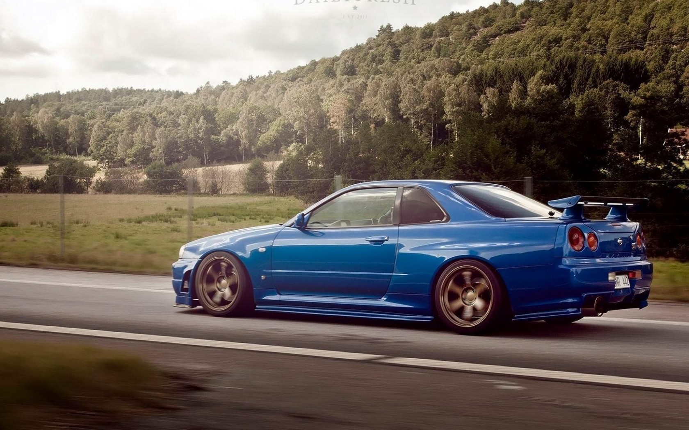

The Nissan Skyline GT-R (Japanese: 日産・スカイラインGT-R, Hepburn: Nissan Sukairain GT-R)
is a Japanese sports car based on the Nissan Skyline range. The first cars named "Skyline GT-R" were produced between 1969 and 1972 under the model code KPGC10,
and were successful in Japanese touring car racing events. This model was followed by a brief production run of second-generation cars, under model code KPGC110, in 1973.

The technology and performance of the R32 GT-R prompted the Australian motoring publication Wheels to nickname the GT-R "Godzilla" in its July 1989 edition.
Wheels then carried the name through all the generations of Skyline GT-Rs, most notably the R34 GT-R, which they nicknamed "Godzilla Returns", and described as "The best handling car we have ever driven". Today, the car is popular for import drag racing,
circuit track, time attack and events hosted by tuning magazines.
Production of the Skyline GT-R ended in August 2002.